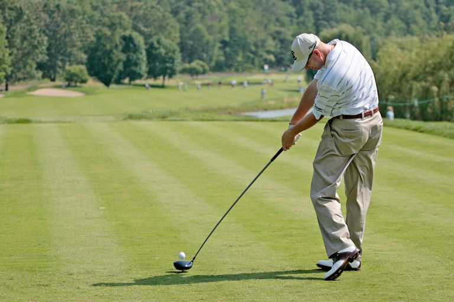
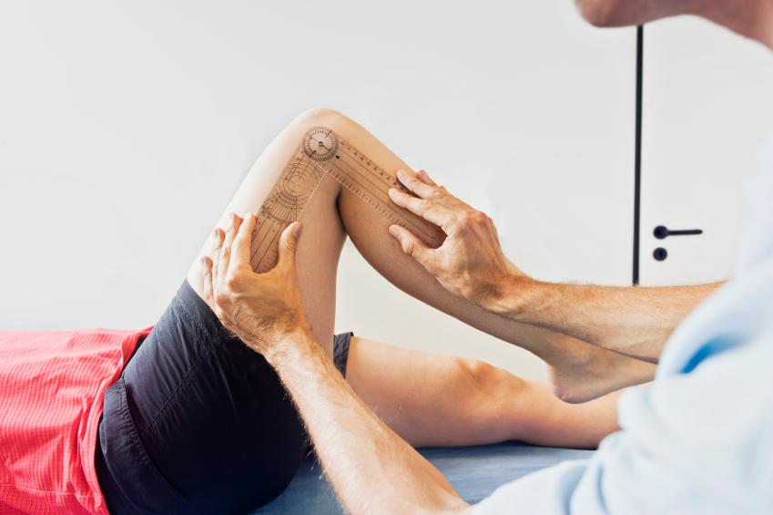

Why Post-Surgical Physical Therapy Matters
Surgery marks the beginning of your recovery, not the end. While your surgeon repairs damaged tissue, reconstructs ligaments, or replaces worn joints, the work of restoring functional strength, mobility, and confidence happens in the weeks and months that follow. Post-surgical physical therapy is the critical bridge between the operating room and your return to daily life, work, and recreation.
At Resolve Physical Therapy in Bend, Oregon, we understand that every surgical recovery is unique. That is why every post-operative session is conducted one-on-one with a licensed Doctor of Physical Therapy. You will never be passed off to an aide or technician. This dedicated approach allows your therapist to provide precise manual therapy, monitor your tissue healing in real time, and modify your exercise program based on how your body responds each session.
Founded in 2018 by Jenny McAteer, DPT, Resolve PT has built its reputation on individualized care that respects both the science of tissue healing and the personal goals of each patient. Whether you are recovering from an ACL reconstruction and aiming to return to skiing on Mount Bachelor, or navigating the early weeks after a total knee replacement so you can hike the Deschutes River Trail again, our team develops a program tailored to your surgery, your body, and your life in Central Oregon.
Research consistently shows that structured, supervised post-surgical rehabilitation leads to better outcomes than home exercise alone. Patients who participate in guided PT programs experience faster restoration of range of motion, greater strength gains, lower rates of complications such as scar tissue adhesions and joint stiffness, and higher satisfaction with their surgical results. Early and consistent physical therapy also reduces the risk of compensatory movement patterns that can lead to secondary injuries down the road.
The Three-Stage Recovery Framework
At Resolve Physical Therapy, we guide every post-surgical patient through a structured three-stage recovery framework. This approach ensures that your rehabilitation respects the biological timeline of tissue healing while progressively challenging your body to regain full function. Each stage has clear goals and criteria for advancement, so you always know where you stand in your recovery.
Stage 1: Immediate Post-Surgery (Weeks 1 to 6)
The first phase of recovery focuses on protecting the surgical repair while managing the immediate effects of the procedure. During this stage, your body is laying down new tissue and beginning the healing process. Your physical therapist will work with you on several key priorities.
Pain management is addressed through gentle manual techniques, positioning strategies, and modalities such as ice and elevation. Swelling reduction is achieved through compression, lymphatic drainage techniques, and controlled movement within safe ranges. Your therapist will teach you wound and incision care awareness so you can monitor healing at home.
Controlled mobility exercises begin immediately, within the boundaries set by your surgeon. For a knee replacement, this might mean gentle bending and straightening exercises on the first day of therapy. For a rotator cuff repair, it could involve assisted range-of-motion work where your therapist moves your arm while the healing tissues remain protected. Gait training with appropriate assistive devices ensures you walk safely and begin to normalize your movement patterns from day one.
Stage 2: Progressive Rehabilitation (Weeks 6 to 16)
Once initial healing milestones are met, your program transitions into a progressive strengthening phase. This is where the foundation for long-term recovery is built. Your therapist will design a customized exercise program that targets the specific muscles and movement patterns affected by your surgery.
Range-of-motion work intensifies during this stage, with the goal of restoring full or near-full joint movement. Strengthening exercises progress from isometric holds (where the muscle works without joint movement) to dynamic exercises with resistance bands, weights, and functional movements. Joint stability and proprioception training help your body relearn how to control the surgical joint during real-world activities.
Manual therapy techniques including soft tissue mobilization, scar tissue management, and joint mobilizations play a central role during this stage. Your therapist uses hands-on work to address tissue restrictions, improve joint mechanics, and reduce residual stiffness. Balance and coordination drills begin to prepare you for the demands of daily activities and eventually more vigorous pursuits.
Stage 3: Return to Activity (Months 4 to 12+)
The final stage of post-surgical rehab is about bridging the gap between clinical recovery and real-world performance. Your therapist will design sport-specific, work-specific, or activity-specific training that mirrors the demands of the life you want to return to.
For athletes, this includes agility drills, plyometric training, sport-specific movement patterns, and return-to-play testing. For active adults in Bend, it might mean progressive hiking programs on uneven terrain, mountain biking readiness assessments, or skiing preparation protocols. For those recovering for daily independence, this stage focuses on stair climbing, carrying groceries, getting on and off the floor, and other functional tasks.
Throughout Stage 3, objective testing measures guide decision-making. Strength tests, hop tests, functional movement screens, and patient-reported outcome measures provide data-driven benchmarks that ensure you are genuinely ready to return to full activity, not just feeling better.
ACL Reconstruction Rehabilitation

The anterior cruciate ligament, or ACL, is a critical stabilizing structure located diagonally in the middle of the knee. It connects the femur (thighbone) to the tibia (shinbone) and prevents the shinbone from sliding forward relative to the thighbone. The ACL also provides rotational stability to the knee, which is essential for cutting, pivoting, and landing from jumps.
ACL injuries are particularly common in sports that involve sudden stops, jumping, and rapid changes of direction. Skiing, soccer, basketball, and football account for a large percentage of ACL tears. In Central Oregon, we see a significant number of ACL injuries related to skiing and snowboarding on the slopes of Mount Bachelor, as well as from trail running and mountain biking on the region's varied terrain.
Most completely torn ACLs cannot heal on their own and require surgical reconstruction. During the procedure, the damaged ligament is replaced with a tissue graft, typically taken from the patient's own patellar tendon, hamstring tendons, or quadriceps tendon. Allograft tissue from a donor is also used in certain cases. The graft serves as a scaffold for new ligament tissue to grow.
Recovery from ACL reconstruction is a lengthy process, typically requiring six to nine months or longer before returning to competitive sports. The rehabilitation timeline is governed by the biology of graft healing: the new ligament goes through phases of incorporation and remodeling that take many months. Rushing this process increases the risk of re-injury.
At Resolve PT, our ACL rehabilitation program follows evidence-based protocols while being individually tailored to each patient. In the early weeks, we focus on restoring full knee extension, reducing swelling, and reactivating the quadriceps. Progressive strengthening begins around six weeks and ramps up through months three and four. Sport-specific training, agility work, and plyometrics are introduced in the later months. Return-to-sport testing evaluates limb symmetry in strength, hop performance, and movement quality before clearance is given.
Total Knee Replacement Recovery

Total knee replacement, also called total knee arthroplasty, is a surgical procedure in which the damaged surfaces of the knee joint are removed and replaced with metal and plastic components. The procedure addresses the worn cartilage, damaged bone, and painful inflammation that characterize advanced knee arthritis. In the United States, more than 700,000 knee replacements are performed each year, and the procedure has a very high rate of patient satisfaction when paired with thorough rehabilitation.
Physical therapy after a total knee replacement should begin as soon as possible, ideally within one to three days following discharge from the hospital or surgical center. Early movement is essential for preventing blood clots, reducing scar tissue formation, and activating the muscles around the new joint. Many patients begin their outpatient PT at Resolve within the first week after surgery.
During the first two weeks, the primary goals are managing pain, decreasing swelling, protecting the incision site as it heals, and restoring the ability to walk with or without an assistive device. Your therapist will use ice, elevation, gentle compression, and manual lymphatic drainage techniques to control post-operative swelling. Gentle range-of-motion exercises, including heel slides and assisted knee bending, begin immediately.

As healing progresses, your rehabilitation program expands to include progressive strengthening of the quadriceps, hamstrings, hip abductors, and calf muscles. Range-of-motion work targets achieving at least 120 degrees of knee flexion, which is necessary for most daily activities including stair climbing and sitting comfortably. Soft tissue massage and scar mobilization prevent adhesions from limiting your movement.
Balance training plays a crucial role in knee replacement recovery. The surgery alters the proprioceptive feedback from your knee joint, and targeted balance exercises retrain your nervous system to control the new joint effectively. Functional activities such as step-ups, sit-to-stand transfers, and walking on varied surfaces are progressively incorporated to prepare you for real-world demands. Most patients achieve a full recovery within three to six months, though continued improvements in strength and confidence can occur for up to a year.
Total Hip Replacement Recovery

Total hip replacement is a surgical procedure in which the damaged ball-and-socket joint of the hip is replaced with artificial prosthetic components. The femoral head (the ball at the top of the thighbone) is replaced with a metal or ceramic component, and the acetabulum (the socket in the pelvis) is resurfaced with a metal cup and plastic or ceramic liner. The procedure is designed to eliminate pain, restore joint function, and improve quality of life.
The most common reason for total hip replacement is osteoarthritis, a degenerative condition in which the cartilage cushioning the joint surfaces wears away over time. Other conditions that may lead to hip replacement include rheumatoid arthritis, avascular necrosis (loss of blood supply to the femoral head), hip fractures, and developmental hip dysplasia. In Bend, we frequently see patients whose hip arthritis has been accelerated by decades of active outdoor pursuits.
After hip replacement surgery, following specific precautions is critical to protecting the new joint while the surrounding tissues heal. Depending on the surgical approach, your surgeon may advise you to avoid crossing your legs, bending the hip beyond 90 degrees, and internally rotating the leg for the first six to twelve weeks. These precautions prevent dislocation of the new prosthesis during the vulnerable healing period. Your physical therapist will teach you safe movement strategies for daily activities including getting in and out of bed, sitting down, and entering a car.

Rehabilitation after hip replacement progresses through structured phases. Initial therapy focuses on gait training, gentle range-of-motion exercises within precaution limits, and activating the gluteal and hip flexor muscles. As healing advances, strengthening exercises target the hip abductors, extensors, and external rotators that are essential for walking without a limp and maintaining pelvic stability.
Most patients transition from a walker to a cane within two to four weeks and are walking independently within six weeks. Full return to activities such as hiking, cycling, swimming, and golf typically occurs within three to four months. At Resolve PT, we work closely with your orthopedic surgeon to ensure that every stage of your rehabilitation respects the specific surgical approach used and the unique characteristics of your prosthesis.
Rotator Cuff Repair Rehabilitation

The rotator cuff is a group of four muscles and their tendons that wrap around the head of the humerus (upper arm bone), holding it securely in the shallow socket of the shoulder blade. These muscles, the supraspinatus, infraspinatus, teres minor, and subscapularis, work together to provide both stability and mobility to the shoulder joint. They allow you to lift your arm, rotate it, and perform overhead movements.
Rotator cuff tears can result from acute injuries, such as a fall onto an outstretched hand, or from gradual wear and degeneration that occurs over years of overhead activity. Research indicates that approximately 80 percent of patients with rotator cuff tears improve with nonsurgical treatment, including physical therapy, activity modification, and anti-inflammatory measures. However, when conservative treatment fails to resolve symptoms, or when the tear is large or occurred suddenly in an active individual, surgical repair is recommended.
Post-surgical rehabilitation for rotator cuff repairs requires careful attention to the healing timeline of the repaired tendon. In the first six weeks, the tendon-to-bone healing is still fragile, and the shoulder is typically immobilized in a sling. During this phase, your physical therapist will guide passive range-of-motion exercises (where the therapist moves your arm for you), ensuring the joint stays mobile without placing stress on the repair. Gentle pendulum exercises and scapular stabilization work may also begin during this phase.
Active motion begins around six to eight weeks, when the repaired tendon has achieved sufficient early healing. Strengthening exercises are introduced gradually between weeks eight and twelve, starting with isometric contractions and progressing to resistance band exercises and light weights. Full strengthening and return to demanding activities typically occurs between four and six months post-operatively, depending on the size of the original tear and the quality of the repair.
At Resolve Physical Therapy, we coordinate directly with your orthopedic surgeon to follow their specific post-operative protocols. Our one-on-one treatment sessions allow for precise manual therapy, including gentle glenohumeral joint mobilizations and soft tissue work around the shoulder, that would not be possible in a group setting.
Meniscus Repair Recovery

The menisci are two C-shaped pads of cartilage that sit between the femur and tibia in the knee joint. They serve as shock absorbers, distributing load across the joint surface and providing stability during weight-bearing activities. Meniscus tears are among the most common knee injuries, occurring frequently during sports that involve twisting, pivoting, or deep squatting motions.
When a meniscus tear is repaired surgically (as opposed to partial removal), the rehabilitation process requires a more conservative approach to protect the healing tissue. Weight-bearing restrictions and range-of-motion limitations are common in the early weeks following a meniscus repair. Your surgeon will specify how much weight you can place through the leg and how far the knee can be bent during the initial healing phase.
At Resolve PT, we follow your surgeon's protocols precisely while working to maintain quadriceps activation and reduce swelling during the protection phase. As the repair heals (typically around six to eight weeks), we progressively restore range of motion, strengthen the surrounding musculature, and introduce functional activities. Full recovery from a meniscus repair typically takes three to six months, with return to pivoting sports occurring around four to six months when strength and function are fully restored.
Our individualized approach is particularly valuable for meniscus repair patients because the line between protecting the repair and preventing stiffness is narrow. One-on-one sessions allow your therapist to make precise judgments about when to advance each component of your program, ensuring the best possible outcome for the healing tissue.
Achilles Tendon Repair Rehabilitation
The Achilles tendon is the largest and strongest tendon in the body, connecting the calf muscles (gastrocnemius and soleus) to the heel bone (calcaneus). It is essential for walking, running, jumping, and pushing off the ground. Achilles tendon ruptures most commonly occur during sudden, forceful movements such as sprinting or jumping, and are particularly prevalent in recreational athletes between the ages of 30 and 50.
Following surgical repair of a ruptured Achilles tendon, rehabilitation progresses through carefully structured phases. The tendon is initially immobilized in a boot or cast with the foot positioned in a slightly downward (plantarflexed) angle. Early motion begins within the first two weeks with gentle ankle pumps and protected range-of-motion exercises within the boot.
Weight-bearing is introduced gradually, typically beginning with partial weight-bearing in the protective boot around two to four weeks and progressing to full weight-bearing by six to eight weeks. The transition out of the boot occurs around eight to twelve weeks, at which point gait retraining becomes a primary focus. Calf strengthening progresses from seated heel raises to standing heel raises to single-leg heel raises over the subsequent months.
Return to running typically occurs around four to six months post-operatively, with a progressive walk-run program guided by your physical therapist. Full return to sport or high-impact activities generally takes nine to twelve months. At Resolve Physical Therapy, we use objective strength testing and functional assessments to guide each transition, ensuring your Achilles has achieved the tensile strength and elasticity necessary for the activities you want to return to.
Related Guides
Knee & Hip Replacement Guide
In-depth guide to joint replacement recovery timelines, exercises, and what to expect at every stage of rehabilitation.
ACL & Shoulder Recovery
Detailed protocols for ligament reconstruction and rotator cuff repair, including return-to-sport criteria and testing.
Running & Sports Rehab
Sport-specific rehabilitation programs for athletes recovering from injury or surgery in Bend, Oregon.
Related Services
Running & Sports Rehabilitation
DorsaVi motion analysis, gait retraining, and return-to-sport programs for runners and athletes.
Chronic Pain & Manual Therapy
Hands-on treatment for persistent pain, joint dysfunction, and soft tissue restrictions.
Shockwave Therapy
Extracorporeal shockwave therapy for tendon disorders, plantar fasciitis, and chronic tissue healing.
Frequently Asked Questions
The timing depends on your specific procedure. For many surgeries such as knee and hip replacements, physical therapy begins within days of the operation. ACL reconstructions typically start within the first week. Your surgeon will provide specific guidelines, and at Resolve Physical Therapy in Bend we coordinate directly with your surgical team to ensure your rehab starts at the optimal time.
Recovery timelines vary by procedure. Total knee replacements generally require three to six months of structured rehab. ACL reconstructions take six to nine months before return to sport. Hip replacements typically see patients returning to normal activities in three to four months. Your therapist at Resolve PT will set clear milestones and adjust your program as you progress.
Oregon is a direct-access state, meaning you can begin physical therapy without a physician referral. However, after surgery your surgeon will typically provide a referral and specific post-operative protocols. We coordinate directly with your surgeon to ensure your rehabilitation aligns with their guidelines and your insurance requirements are met.
Wear comfortable, loose-fitting clothing that allows easy access to your surgical site. Shorts are ideal for knee and hip surgeries. For shoulder procedures, a button-down or zip-up top works best. Bring supportive athletic shoes and any braces, slings, or assistive devices your surgeon has prescribed.
Yes, post-surgical physical therapy is covered by most insurance plans, including Medicare and Medicaid/OHP. At Resolve Physical Therapy in Bend, we accept most major insurance carriers and will verify your benefits before your first visit so you understand your coverage and any out-of-pocket costs.
At Resolve Physical Therapy, every post-surgical session is one-on-one with your licensed physical therapist for the full duration. You are never handed off to an aide or assistant. This individualized approach allows for precise manual therapy, real-time exercise modification, and faster progress toward your recovery goals. Our team coordinates directly with your surgeon to ensure your rehab follows the appropriate protocols for your specific procedure.
Ready to Start Your Post-Surgical Recovery?
Schedule your post-operative evaluation with a Doctor of Physical Therapy at Resolve PT. One-on-one care, evidence-based protocols, and a clear plan to get you back to the activities you love in Bend, Oregon.